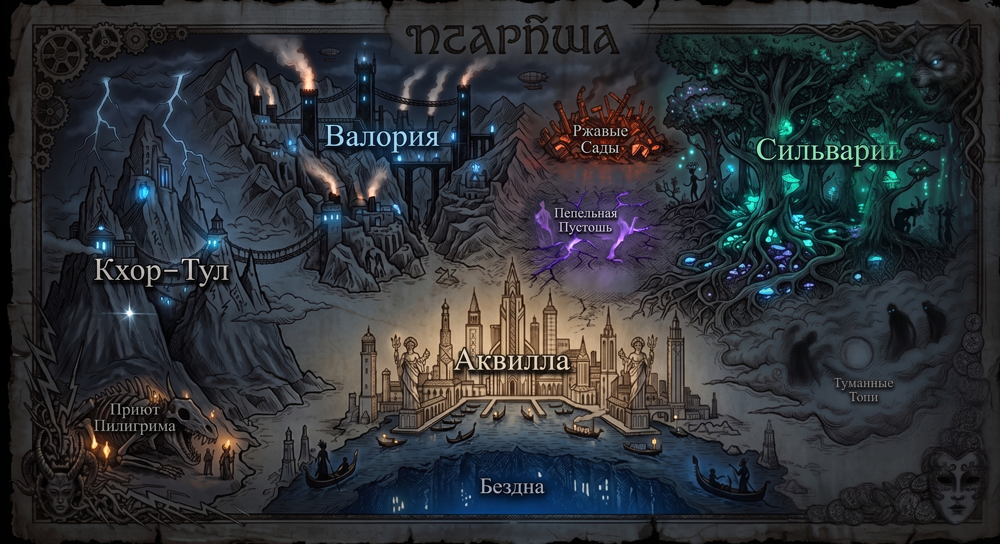
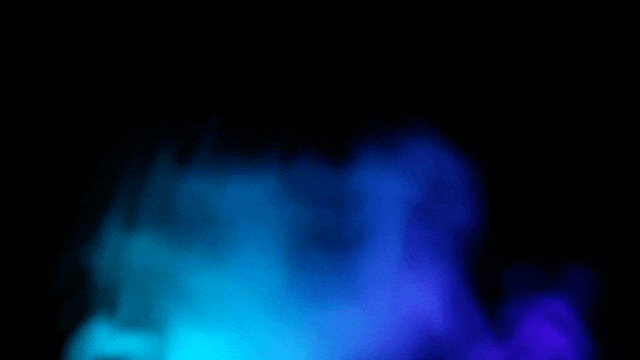
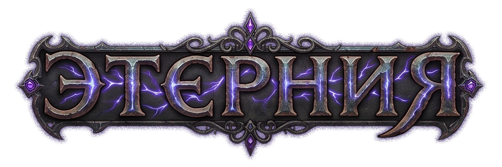

«Плоть слаба. Шестерни вечны.»
Верховный Архонт Валории. От живой плоти в нем осталось лишь сердце, всё остальное — шедевры из черной стали и мерцающих рун.
Лишен человеческих страстей. Говорит рублеными фразами, оценивая мир через призму эффективности.
Не спит уже 10 лет, его разум интегрирован в вычислительную машину Оплота.
«Мы не спешим. Лес помнит всё.»
Матриарх Сильварии. Древний Лесной Вечник. Её ноги превратились в корневую систему, навсегда связавшую её с живым троном-деревом.
Отстраненная, голос звучит как шелест листвы. Видит мир глазами каждой птицы леса.
В гневе может приказать лесу прорасти сквозь врага, оставив на его месте цветущий куст.
«У каждого секрета есть своя цена.»
Великий Дож Аквиллы. Аристократ Ихорец, чье тело пропитано магией Бездны, отчего кожа кажется почти прозрачной.
Воплощение изящества. Остроумен и коварен, способен продать человеку его же ботинки.
Фанатично ищет воспоминания о Серой Мгле, коллекционируя чужую память.
«Ибо тьма очищается лишь огнем.»
Патриарх Кхор-Тула. Старейший Остогон. Его рога срослись в корону, а закрытые глаза видят скрытую суть.
Религиозный фанатик. Голос гремит как шторм. Считает, что слышит сердце богов.
Готовит свой народ к походу, чтобы выжечь ересь в мире до прихода Мглы.